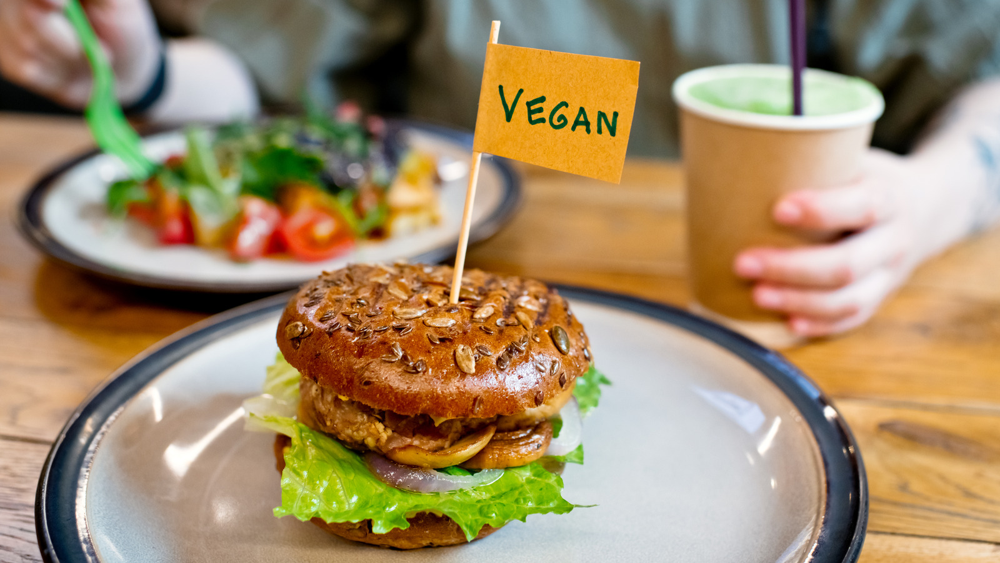
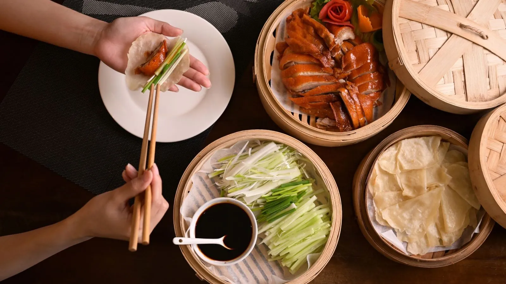

Chi'Best Foods?
What is it? Making fresh Mediterranean tapas for you, that is our greatest passion. We were mainly inspired by the African sea food.You can come to us for a tapa with your wine or a refreshing cocktail, but also for "African soup" a richly filled table with good food. We do this in one of Maastricht's most beautiful and historic streets. Together with our chef and our international team, we strive every day to find the right balance between American cuisine and our African Soup.
Our Assurance To Customers
We do everything we can to provide the best experience and we are happy to share your good experience and
we also remain one of the best food server's you can witness:
Super spontaneous reception from the employees, this really gave a warm and welcome feeling. Good service and delicious dishes, we could hardly choose. In short, we will definitely come back here more often!
Quality excellent! Staff is friendly, some speak English, no problem for us, but in tapas restaurants you often have to bring a well-filled wallet.
Ralf .almo

Best tapas in town By far the best tapas in town at the moment! Ordered here several times during the lockdown and now ate here in the restaurant itself for the first time. It's just super tasty. Quality excellent! Staff is friendly, some speak English, no problem for us, but in tapas restaurants you often have to bring a well-filled wallet. That's not just here, but you do get value for your money! Everything is equally delicious!
silviaThomson
Coziness, quality and top service. A fantastic place to eat tapas. Very nice and cozy restaurant with very nice service and top food. Enjoyed all the tapas. Many distinctive dishes. I have not often eaten such delicious tapas. Also tasted a few unique beers here. Definitely recommended for anyone in Maastricht.
Jasper vandan
Delicious dinner with 6 people on Saturday evening! Everything freshly prepared, delicious in taste, very nice service and excellent price/quality, surprising dishes. We will definitely come back again! 😘
HenriW
Tapas, each and every one of them, delicious. Very friendly staff. We first sat outside, but it started to rain. In no time the tables were set up inside, neatly spaced apart, and everyone could continue eating there. When I reported after payment that they had only charged two wines instead of 4, it was so appreciated that we were offered those two wines from the company!! Top!!
Esther Parker
Really FANTASTIC!!! If I could give 10 stars, I would. Nice, cozy place. Very friendly staff (English speaking, was no problem for us). The food was really phenomenal, especially the chicken with honey. To be repeated!
Warsha J.
Delicious! It was delicious. Pure flavors, in traditional tapas. I liked that there wasn't a very large menu, but what was on it was delicious. Everything. We were with my children, who also liked everything (10-13-16). And a special ice cream dessert was made for the youngest. Delicious!😘😘😘
Alexander r.o
We recommend 3 or 4 or 5 dishes per person. The tapas arrive at your table gradually and with us the rule is: share together. (Compartimos). Please indicate if you want the tapas at the same time or in a certain order.
Bread
Vegetable + Cheese
Burger
Meat
Dessert
Fried cauliflower in tempura
Chocolate for coffee
grilled tomato, gratinated with goat cheese.
Fried cauliflower in tempura
Spanish sheep cheese with honey
Homemade seasoned chicken wings with honey
.accordion-flush class. This is the first item's accordion body..accordion-flush class. This is the second item's accordion body. Let's imagine this being filled with some actual content..accordion-flush class. This is the third item's accordion body. Nothing more exciting happening here in terms of content, but just filling up the space to make it look, at least at first glance, a bit more representative of how this would look in a real-world application.